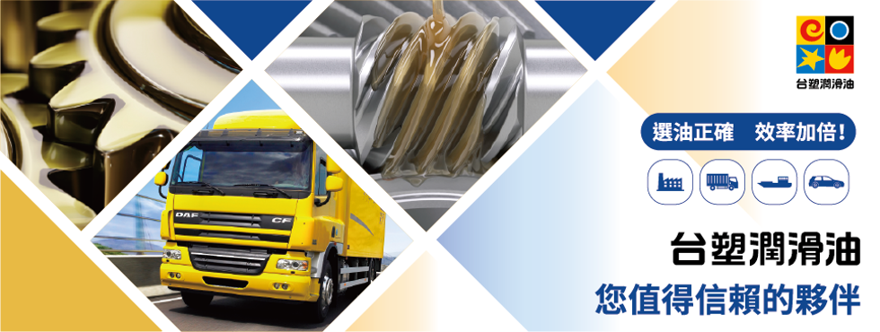

潤滑油品專家(工業潤滑油)，圓華油品為提供給國內的消費者更多元的潤滑油選擇，台塑石油自民國八十八年正式跨入國內市場，並於民國九○年推出潤滑油產品，以發展更全面的潤滑油服務及工業潤滑油。台塑潤滑油初期僅在企業內部使用及加油站銷售，經過十年的技術及經驗累積，終於在民國一○○年開始全面進軍國內外市場。
身為目前國內唯一生產基礎油的潤滑油供應商，我們具備穩定且優質的基礎油供應來源，並結合先進的配方技術與卓越的製造能力，研發符合廣大工業設備與運輸車輛需求的高品質潤滑油。為深耕台灣市場，我們多年來不斷地開發新品項及強化產品性能，以滿足越趨嚴苛且多樣化的市場需求，並搭配完整且綿密的經銷商網絡，提供給消費者更即時的服務
目前台塑潤滑油產品線已囊括工業、重車、船舶、小客車等方面。以台灣在地精神，生產出符合國際品質的台塑潤滑油來服務這塊美麗土地上的大眾，讓各行各業，大至企業小至個人，都能找到符合自己需要的台塑潤滑油，期待未來能更進一步推向世界，成為潤滑油業界的台灣之光！
品牌油品系列 :

台塑 潤滑油系列
- 01
 潤滑脂
潤滑脂極壓鋰基潤滑脂
台塑渦輪機油TB GII 系列由高品質符合API Group II 標準之基礎油和低灰份添加劑等配方調製而成，具 有高度抗氧化及防止酸質物形成之效能，同…
查看產品資訊 → - 02潤滑脂
高溫極壓複合鋰基潤滑脂
台塑高溫極壓複合鋰基潤滑脂是一款專為高溫操作環境所研發而成的高品質潤滑脂，採用高黏度指數礦物基礎油與複合鋰基增稠劑，另含有抗氧化、抗磨損、耐極壓、抗腐蝕…
查看產品資訊 → - 03潤滑脂
多效鋰基潤滑脂
台塑多效鋰基潤滑脂是由高品質礦物基礎油與鋰皂基增稠劑，調配抗氧化、防鏽以及抗腐蝕等添加劑組合而成，適用於一般工業機械、軸承、馬達以及低轉速齒輪之應用，是…
查看產品資訊 → - 04API Group II
螺旋式空壓機油 SC GII
台塑螺旋式空壓油SC GII 系列是專為螺旋式及葉片式空壓機所研發而成的高品質潤滑油，本產品採用符 合API Group II 標準之高精煉基礎油以及特…
查看產品資訊 → - 05API Group II
往復式空壓機油 RC GII
台塑往復式空壓油RC GII 系列採用符合API Group II 標準之高精煉基礎油以及特選無灰份抗磨耗、抗乳 化等添加劑調製而成，品質與性能皆超越一…
查看產品資訊 → - 06API Group II
渦輪機油 TB GII
台塑渦輪機油TB GII 系列由高品質符合API Group II 標準之基礎油和低灰份添加劑等配方調製而成，具 有高度抗氧化及防止酸質物形成之效能，同…
查看產品資訊 → - 07API Group II
台塑齒輪油 GII
台塑齒輪油Group II 系列是專為工業重載齒輪系統所研發的高效能齒輪油，由符合API Group II 標準之高精煉基礎油，比一般礦物油等級之齒輪油…
查看產品資訊 → - 08API Group II
台塑錠子油 GII
台塑錠子油Group II 系列是由符合API Group II 標準之高精煉基礎油配方，比一般礦物油等級之產品具備更優異潤滑保護性能，同時搭配精選抗磨…
查看產品資訊 → - 09API Group II
台塑熱媒油 GII
台塑熱媒油GII 系列採用符合API GII 標準之高精煉基礎油，尤其針對熱傳導系統的高溫應用環境下，更能顯現出比一般礦物油等級之熱媒油產品的高抗氧化及…
查看產品資訊 → - 10API Group II
台塑滑道油 GII
台塑滑道油 GII 系列是專為工具機、CNC 車床、銑床等機械設備滑道所研發的高品質潤滑油，具有絕佳的低摩擦、抗乳化以及滑道黏附特性，滿足現代自動化且高…
查看產品資訊 → - 11API Group II
台塑液壓油 AW GII
台塑液壓油AW Group II 系列採用符合API Group II 標準之高精煉基礎油，比一般礦物油等級之液壓油產品具備更優異的抗氧化及熱穩定性能…
查看產品資訊 → - 12API Group II
台塑循環油 GII
台塑循環油Group II 系列是由符合API Group II 標準之高精煉基礎油配方，比一般礦物油等級之產品具備更優異潤滑保護性能，同時搭配精選抗磨…
查看產品資訊 →
有現場問題，不確定該從哪裡開始？
- 不確定該使用哪一款油品？
- 正在處理切削液壽命、異味、生鏽或廢水問題？
告訴我們目前的加工條件與使用情況，由圓華團隊協助了解需求並評估適合的產品與服務方式。
圓華油品股份有限公司
- Tel
- 04-2335-5559
- Fax
- 04-2335-8886
- Hours
- 週一至週五 08:00 – 17:00